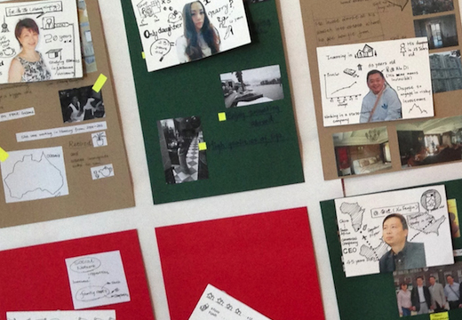
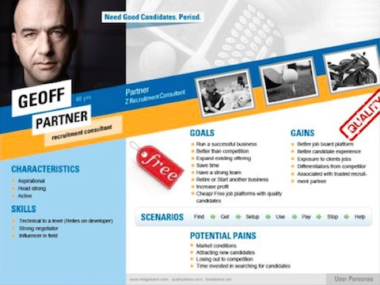
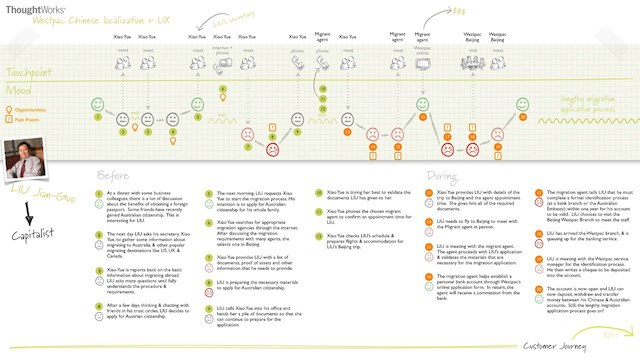
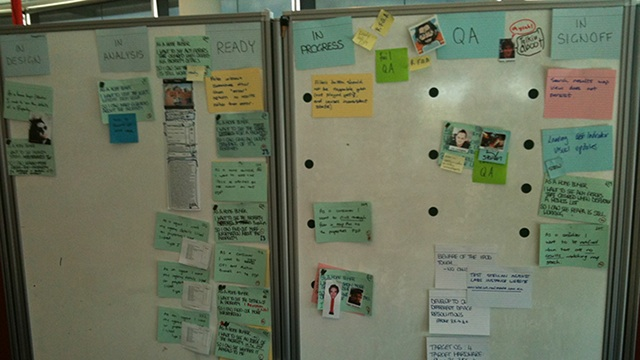
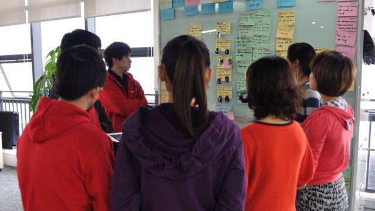
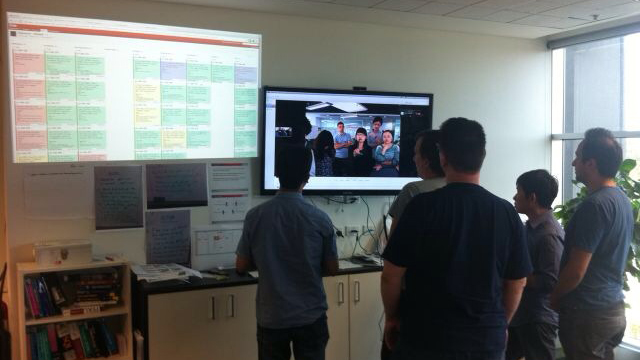

终于写完我第二篇博客了… :p
在上篇博客中，我概略说说我在互联网行业的这些年内，对一些现象和想法的一些看法（详见《互联网新世界＝思维革命》一文），也很高兴不少身边的朋友跟我反馈了不少意见。 或许，这次我说点比较实在点的东西吧，先说说我在行业内看到的一些崭新工作方式。
究竟，他们怎样的DNA和运作理念，能让公司因应市场迅速应对和演进？
它们是怎样做的？
前期策划阶段
市场调研？
太慢了！结果出来市场状况都改变了..
Customer segmentation？
(注：抱歉中文不好，中文好像翻译作客户细分，就是我们常听到，我们这款产品是针对二十到三十岁的白领，年薪于xx万到xx万之间…) 太笼统了！以用户为中心的市场新秩序，你真的有办法掌握用户的潜在需求?
其实，现在我们是这样理解市场的：
|  |  |  |
{kind=link}
{kind=link}
我们就像調查案件或拍电影那样，建立多个有血有肉的角色，我们叫做personas…
然后通过一系列的工作坊，以游戏及互动方式，从一个概念，共同探索并制订出下一步的方向，这个过程在行内通常称之为ideation。 而在当中，亦通过理解最终户的潜在想法，发掘当中可行的切入点，到最后找出更切合用户的服务和方案。
 |  |
{kind=link}
由于客户在业务发展中越趋重视，因此，近年也衍生了出一门专业，叫做用户体验（或广义一点叫做体验设计），小弟以往做谘询的其中一个负责专业范畴就是这个。
其实UX当中也包含更多不同的工作和要求，而当中各种做法背后都有着各种原因的，容我分开在往后篇章一一说清楚吧.. :p
后期执行阶段
我们是这样协作和管理计划进度的： 
{kind=link}
我们有不同形式的Casual小会议，这是其一： 
{kind=link}
跟客户，或团队在不同地方，也可以是有效共同工作和协作： 
{kind=link}
我们会有定期检讨，反馈并发掘改进的机制，让我们因应团队或市场等状况适时调节改进 
其实，这背后是有一个以拥抱改变为核心的一套敏捷(Agile)机制，其普及始于IT的创新企业，但近年慢慢看到该管理理念伸延到其他行业应用，最出名的例子是法国的Airbus飞机制造公司。这当中以协作为中心，并能因应市场迅速应对和演进。
但其实，虽然说了不少，但我觉得，方法永远不是重点，也很讨厌方法论。为了做而做，得出来的结果，也只会是貌合神离，自己也看到不少这情况…
那…究竟怎样才能让企业体现「互联网思维」的精粹？
下回或许说说我当中的理解吧~ 希望能对大家有所启发和帮助吧~
（P.S. 要觉得我的东西有点意思，观迎在各平台关注我的动态和发布内容 ;-).. 谢了~~)
| ＜上一篇 | 下一篇＞ |